campaign-deck-dedupe-channels PASS 1.0
grade deckintent transformdomain marketingdifficulty d3ambiguity a4voice politeapps libreoffice_impress + filesbatch wave2-fill2
Could you clean this deck up? Each channel should appear only once -- keep the first slide for a channel and drop the later repeats, leaving everything else in the order it's in now.
task config + evaluator
{
"config": [
{
"type": "execute",
"parameters": {
"command": "mkdir -p '/home/user/Desktop' && rm -f '/tmp/__fixture.b64' && printf %s '' >> '/tmp/__fixture.b64' && base64 -d '/tmp/__fixture.b64' > '/home/user/Desktop/campaign_channels.pptx'",
"shell": true
}
},
{
"type": "open",
"parameters": {
"path": "/home/user/Desktop/campaign_channels.pptx"
}
}
],
"evaluator": {
"func": "compare_pptx_files",
"result": {
"type": "vm_file",
"path": "/home/user/Desktop/campaign_channels.pptx",
"dest": "campaign-deck-dedupe-channels-result.pptx"
},
"expected": {
"type": "cloud_file",
"path": "http://127.0.0.1:8021/wave2-fill2/files/campaign-deck-dedupe-channels/gold/campaign_channels.pptx",
"dest": "campaign-deck-dedupe-channels-gold-9642ffb4.pptx"
},
"postconfig": [
{
"type": "activate_window",
"parameters": {
"window_name": "campaign_channels.pptx - LibreOffice Impress",
"strict": true
}
},
{
"type": "sleep",
"parameters": {
"seconds": 0.5
}
},
{
"type": "execute",
"parameters": {
"command": [
"python",
"-c",
"import pyautogui; pyautogui.hotkey(\"ctrl\", \"s\");"
]
}
},
{
"type": "sleep",
"parameters": {
"seconds": 0.5
}
}
]
}
}
step 1 12:12:26
THINKINGLet me understand the task. The user has a LibreOffice Impress presentation called "campaign_channels.pptx" with 8 slides. They want me to clean up the deck so each channel appears only once — keeping the first slide for a channel and dropping later repeats, while leaving everything else in the current order.
First, I need to understand what channels are in each slide. Let me look at the slides:
1. Spring Campaign Channels (title slide) - "Draft, merged from two decks"
2. Paid Search - "Budget: $, CPA:2"
3. Email - "Budget: 120 (12%"
4. Paid Social - "Budget: 2, CPA:1"
5. Email - "Budget: 120 (12%"
6. Display - "Budget: 120 (12%"
7. Paid Search - "Budget: $, CPA:2"
8. Affiliate - (cut off)
So it looks like there are repeats:
- Email appears on slides 3 and 5
- Paid Search appears on slides 2 and 7
I need to look more carefully at each slide to understand the exact channel names and which are repeats. Let me take a screenshot first and then examine each slide carefully.
Actually, let me think about this more carefully. The task is about identifying channels that appear multiple times and keeping only the first occurrence. I need to:
1. Examine all slides to identify the channel on each
2. Determine which are repeats
3. Delete the repeat slides (keeping the first occurrence)
Let me look at each slide carefully. I should click on each slide to see its content. But the thumbnails already show me:
- Slide 1: "Spring Campaign Channels" (title)
- Slide 2: "Paid Search"
- Slide 3: "Email"
- Slide 4: "Paid Social"
- Slide 5: "Email"
- Slide 6: "Display"
- Slide 7: "Paid Search"
- Slide 8: "Affiliate" (cut off, need to see)
But wait, I need to be careful. The channel names in the titles might be what matters, or there might be more detail in the body text. Let me examine each slide to be sure.
Actually, I should be careful about whether the "channel" is determined by the slide title or by something in the body. The task says "Each channel should appear only once." The channel is likely the slide title (Paid Search, Email, Paid Social, Display, Affiliate, etc.).
Let me look at each slide. I'll need to scroll down to see slide 8 and beyond. The status bar says "Slide 1 of 8" so there are 8 slides.
Let me first examine the slides more carefully by clicking on each one to read the content. Let me start by looking at each slide's title and content.
Actually, to be thorough, I should read the full content of each slide because the "channel" might be defined more specifically. But the titles seem to be the channel names. Let me verify by clicking through the slides.
Let me take a screenshot first to get the current state, then click through slides.
Actually, I already have a screenshot. Let me zoom into the thumbnails or click each slide to read content.
Let me think about the safest approach:
1. Click each slide to read its title and body
2. Identify duplicates
3. Delete duplicate slides (later occurrences)
Let me start clicking through. I'll click slide 2 first.
Actually, let me be efficient. The thumbnails give me the titles. But I want to confirm the body content too, in case the channel is specified there. Let me click on each slide.
Let me start by clicking on slide 2.
Wait, I should reconsider. Maybe I should just read all the thumbnails by zooming. The thumbnails show:
- Slide 2: "Paid Search" / "• Budget: $, CPA:2"
- Slide 3: "Email" / "• Budget: 120 (12%"
- Slide 4: "Paid Social" / "• Budget: 2, CPA:1"
- Slide 5: "Email" / "• Budget: 120 (12%"
- Slide 6: "Display" / "• Budget: 120 (12%"
- Slide 7: "Paid Search" / "• Budget: $, CPA:2"
- Slide 8: "Affiliate"
So the repeats appear to be:
- Email: slides 3 and 5
- Paid Search: slides 2 and 7
I need to keep first occurrence and delete later:
- Keep slide 3 (Email), delete slide 5 (Email)
- Keep slide 2 (Paid Search), delete slide 7 (Paid Search)
But I should verify by reading the actual content. Let me click on each slide to be sure about the channel names and content. It's important to get this right.
Let me be methodical. I'll click each slide and read it. Let me start.
Actually, before I start deleting, I really should confirm the exact channel names by reading each slide's full content. The thumbnails are small. Let me click through.
Let me plan: I'll examine slides 2-8 carefully. Let me click on slide 2.
Let me start by closing those notification bars at the top (the "Help us make LibreOffice even better!" and donation bar) to clean up the view. Actually, that's optional. Let me focus on the task.
Let me click through each slide to read content. I'll start with slide 2.
Let me first take a careful look. I'll click on each slide in the panel and screenshot.
Actually, I realize I should read the content precisely. Let me click on slide 2 and take a screenshot.
ACTIONI'll start by examining each slide carefully to identify the channels and find the duplicates. Let me click through the slides.
TOOL CALL<tool_call>
<function=computer_use>
<parameter=action>
left_click
</parameter>
<parameter=coordinate>
[87, 349]
</parameter>
</function>
</tool_call>
EXECUTED (pyautogui in VM)pyautogui.click(167, 377)
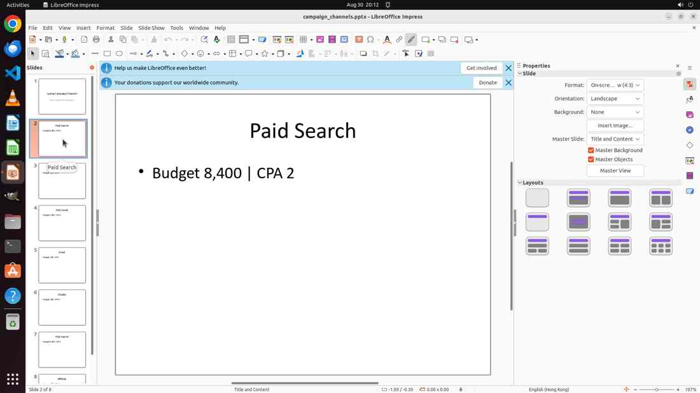
step 2 12:12:40
THINKINGSlide 2: "Paid Search" - "Budget 8,400 | CPA 2"
Interesting! The tooltip on slide 3 shows "Paid Search" now? Wait, no. Let me look at the thumbnail. When I hover over slide 3, there's a tooltip that says "Paid Search" - wait, that might be a leftover tooltip. Let me re-examine.
Actually, looking at the thumbnails again:
- Slide 3: The title in the thumbnail looks like it could be "Paid Search" or "Email". There's a tooltip showing "Paid Search" over slide 3 area. Hmm, that's confusing.
Wait, the tooltip near slide 3 says "Paid Search" but that might be a hover tooltip that's misplaced. Let me look at slide 3 by clicking it.
Actually, wait. In the first screenshot, slide 3's thumbnail title looked like "Email". But now the tooltip over slide 3 shows "Paid Search". That's odd. Let me not rely on tooltips. Let me click each slide and read the main view.
Actually, I think the tooltip is just a lingering element. Let me click on slide 3 to read it properly.
Wait, I need to reconsider. Let me re-look. The thumbnails in the first screenshot:
- Slide 2: "Paid Search"
- Slide 3: "Email"
- Slide 4: "Paid Social"
- Slide 5: "Email"
- Slide 6: "Display"
- Slide 7: "Paid Search"
- Slide 8: "Affiliate"
But now in this screenshot, there's a tooltip showing "Paid Search" near slide 3. This is confusing. The tooltip might be delayed/lingering from hovering. Let me just click each slide to read the main content area which is reliable.
Slide 2 is now shown: "Paid Search" / "Budget 8,400 | CPA 2"
Let me click slide 3.
ACTIONSlide 2 is "Paid Search" with "Budget 8,400 | CPA 2". Let me check slide 3.
TOOL CALL<tool_call>
<function=computer_use>
<parameter=action>
left_click
</parameter>
<parameter=coordinate>
[87, 458]
</parameter>
</function>
</tool_call>
EXECUTED (pyautogui in VM)pyautogui.click(167, 495)
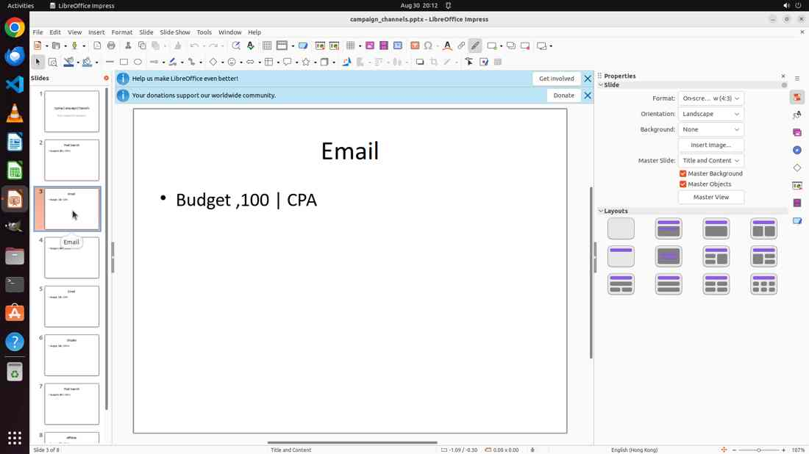
step 3 12:12:56
THINKINGSlide 3: "Email" / "Budget ,100 | CPA"
Interesting, the body text is cut off / weird. It says "Budget ,100 | CPA". The budget value and CPA value seem incomplete. This might be because the text is being cut off in display, or the data is genuinely like that. Let me not worry about the exact body content - the channel is "Email".
There's a tooltip "Email" showing near slide 4 area (lingering tooltip). Let me continue.
Slide 3 = Email.
Let me click slide 4.
ACTIONSlide 3 is "Email". Let me check slide 4.
TOOL CALL<tool_call>
<function=computer_use>
<parameter=action>
left_click
</parameter>
<parameter=coordinate>
[87, 566]
</parameter>
</function>
</tool_call>
EXECUTED (pyautogui in VM)pyautogui.click(167, 611)
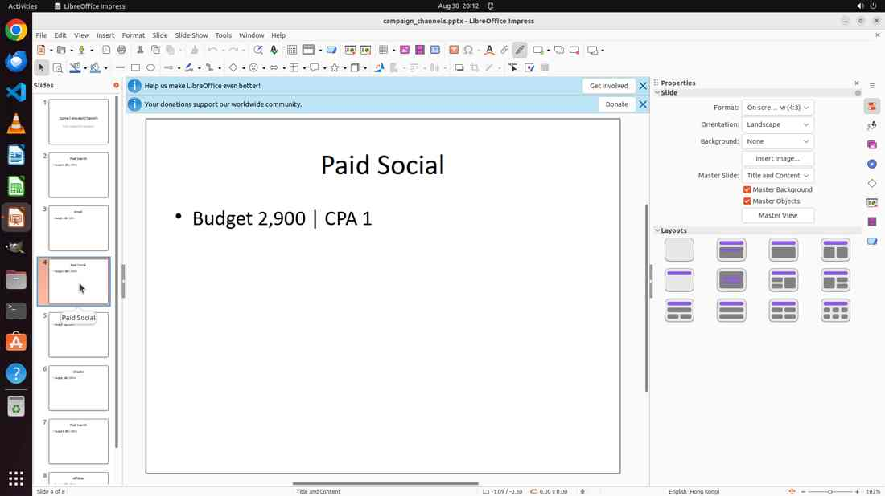
step 4 12:13:09
THINKINGSlide 4: "Paid Social" / "Budget 2,900 | CPA 1"
There's a lingering tooltip "Paid Social" near slide 5. Let me click slide 5.
ACTIONSlide 4 is "Paid Social". Let me check slide 5.
TOOL CALL<tool_call>
<function=computer_use>
<parameter=action>
left_click
</parameter>
<parameter=coordinate>
[87, 674]
</parameter>
</function>
</tool_call>
EXECUTED (pyautogui in VM)pyautogui.click(167, 728)
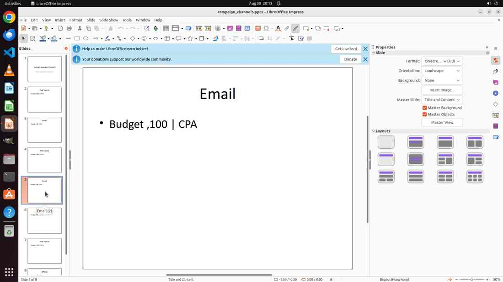
step 5 12:13:21
THINKINGSlide 5: "Email" / "Budget ,100 | CPA"
This is a repeat of slide 3 (Email). There's a lingering tooltip "Email (2)" near slide 6.
So slide 5 is a duplicate of slide 3 (Email). I should delete slide 5 (keep slide 3).
Let me continue to slide 6.
ACTIONSlide 5 is "Email" again — a repeat of slide 3. Let me check slide 6.
TOOL CALL<tool_call>
<function=computer_use>
<parameter=action>
left_click
</parameter>
<parameter=coordinate>
[87, 780]
</parameter>
</function>
</tool_call>
EXECUTED (pyautogui in VM)pyautogui.click(167, 843)
step 6 12:13:33
THINKINGSlide 6: "Display" / "Budget ,500 | CPA 4"
There's a lingering tooltip "Display" near slide 7. Wait, that's concerning. The tooltip near slide 7 says "Display". But in the first screenshot, slide 7's title looked like "Paid Search". Let me be careful here.
Hmm, actually these tooltips are showing the title of the slide I'm currently hovering over or the previous one. The tooltip "Display" near slide 7 is likely a lingering tooltip from my mouse movement. But wait, it could also indicate that slide 7 is "Display".
Actually, no. Let me reconsider. The tooltips appear to follow the mouse cursor with a delay. When I click on slide 6 (at coordinate 113, 563), the mouse is now over slide 6. The tooltip showing "Display" near slide 7 (at ~113, 615) is a leftover.
Actually, I'm now worried. Let me re-examine. The tooltip is positioned below the current selection sometimes. Let me not rely on tooltips and instead click each slide to read the main content.
But wait — there's a real concern. What if slide 7 is actually "Display" and not "Paid Search"? In the very first screenshot, the thumbnail for slide 7 showed "Paid Search". Let me verify by clicking slide 7.
Let me click slide 7.
ACTIONSlide 6 is "Display". Let me check slide 7.
TOOL CALL<tool_call>
<function=computer_use>
<parameter=action>
left_click
</parameter>
<parameter=coordinate>
[87, 888]
</parameter>
</function>
</tool_call>
EXECUTED (pyautogui in VM)pyautogui.click(167, 960)
step 7 12:13:42
THINKINGSlide 7: "Paid Search" / "Budget 8,400 | CPA 2"
This is a repeat of slide 2 (Paid Search). So slide 7 is a duplicate.
There's a lingering tooltip "Paid Search (2)" near slide 8. Let me click slide 8 to see it.
ACTIONSlide 7 is "Paid Search" again — a repeat of slide 2. Let me check slide 8.
TOOL CALL<tool_call>
<function=computer_use>
<parameter=action>
left_click
</parameter>
<parameter=coordinate>
[87, 956]
</parameter>
</function>
</tool_call>
EXECUTED (pyautogui in VM)pyautogui.click(167, 1033)
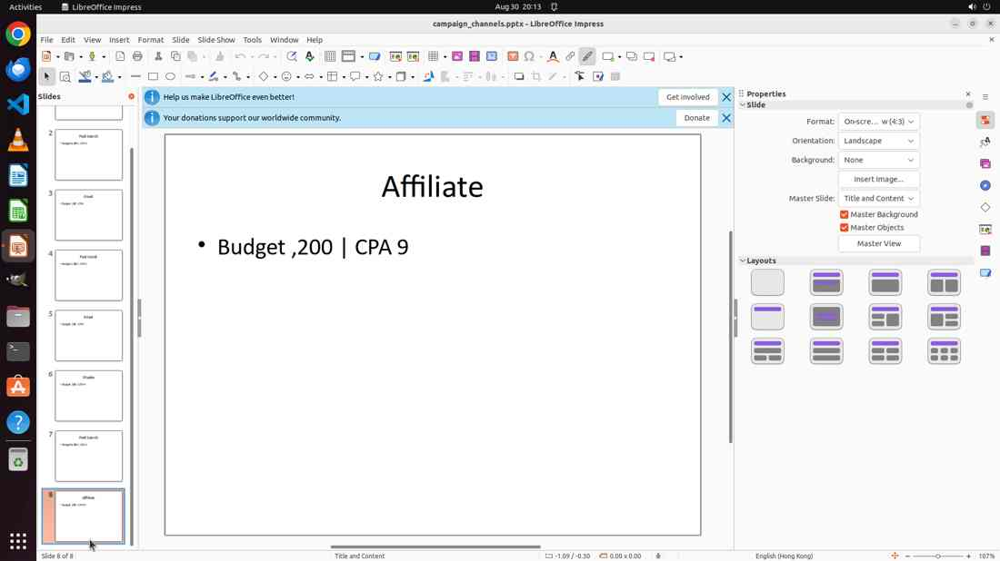
step 8 12:14:25
THINKINGSlide 8: "Affiliate" / "Budget ,200 | CPA 9"
Now I have the full picture. Let me list all slides:
1. Spring Campaign Channels (title slide) - keep
2. Paid Search - keep (first occurrence)
3. Email - keep (first occurrence)
4. Paid Social - keep (first occurrence)
5. Email - DELETE (repeat of slide 3)
6. Display - keep (first occurrence)
7. Paid Search - DELETE (repeat of slide 2)
8. Affiliate - keep (first occurrence)
So I need to delete slides 5 and 7.
Let me double check the channels:
- Slide 1: title (not a channel, it's the title slide)
- Slide 2: Paid Search
- Slide 3: Email
- Slide 4: Paid Social
- Slide 5: Email (repeat)
- Slide 6: Display
- Slide 7: Paid Search (repeat)
- Slide 8: Affiliate
The title slide "Spring Campaign Channels" is not a channel itself, it's the deck title. So it should be kept.
Channels and their first occurrence:
- Paid Search: slide 2 (keep), slide 7 (delete)
- Email: slide 3 (keep), slide 5 (delete)
- Paid Social: slide 4 (keep)
- Display: slide 6 (keep)
- Affiliate: slide 8 (keep)
So I need to delete slides 5 and 7.
Important: When I delete slide 5, the slide numbers shift. So slide 7 becomes slide 6. I need to be careful about the order of deletion.
Best approach: Delete from the later slide first to avoid index shifting issues. So:
1. First delete slide 7 (Paid Search repeat)
2. Then delete slide 5 (Email repeat)
If I delete slide 7 first, then slide 5 is still slide 5. Then delete slide 5.
Alternatively, I can select both slides 5 and 7 with Ctrl+click and delete them together. Let me do that — it's cleaner.
Actually, let me think. In the Slides panel, I can right-click a slide and choose "Delete Slide". Or I can select the slide and press Delete. Or I can select multiple with Ctrl+click and then right-click > Delete Slide.
Let me use the approach of right-clicking on a slide and selecting Delete Slide. But I need to do it for both slide 5 and slide 7.
Actually, the cleanest way: In the slide panel, click slide 5, then Ctrl+click slide 7 to select both, then right-click and choose "Delete Slide". This deletes both at once.
Wait, but can I right-click to delete multiple selected slides? Yes, in LibreOffice Impress, you can select multiple slides and right-click > Delete Slide to delete all selected.
Let me scroll up in the slide panel to see slide 5 and slide 7 together. Currently I'm viewing slides 2-8 (slide 1 is scrolled off top). I can see slides 2, 3, 4, 5, 6, 7, 8.
Let me click on slide 5 first. Slide 5 is at approximately (113, 428). Then Ctrl+click slide 7 at approximately (113, 590).
Actually, let me be careful with the coordinates. Looking at the current screenshot:
- Slide 2: ~y=189
- Slide 3: ~y=270
- Slide 4: ~y=350
- Slide 5: ~y=430
- Slide 6: ~y=510
- Slide 7: ~y=590
- Slide 8: ~y=665
Let me click slide 5 at (113, 430), then Ctrl+click slide 7 at (113, 590).
Actually, let me reconsider whether I should verify the body content more. The body text for some slides showed incomplete values like "Budget ,100 | CPA" for Email. This is strange. But the channel identification is based on the title, which is clear. The task is about channels appearing once, so I'll use the titles.
Actually wait, let me reconsider the body content. The email slides showed "Budget ,100 | CPA" which is missing the leading digits of the budget and the CPA value. This could be a display issue where the text is cut off, OR the data might genuinely be formatted oddly. But this doesn't affect my task — I'm identifying channels by their title, and the Email channel appears on slides 3 and 5, so I keep slide 3 and delete slide 5.
Hmm, but actually, let me reconsider. What if the "channel" is determined by the title AND there could be subtle differences? No, the titles are clearly the channel names: Paid Search, Email, Paid Social, Display, Affiliate. These are standard marketing channels. The task is straightforward: remove duplicate channel slides, keeping the first.
So my plan:
- Delete slide 5 (Email repeat)
- Delete slide 7 (Paid Search repeat)
Let me select both and delete. Let me click slide 5 first.
Actually, I realize I should double-check: are slides 3 and 5 truly the same channel "Email"? Yes, both titles say "Email". And slides 2 and 7 both say "Paid Search". Good.
Let me also make sure there are no other channels I'm missing. The 8 slides:
1. Title
2. Paid Search
3. Email
4. Paid Social
5. Email (dup)
6. Display
7. Paid Search (dup)
8. Affiliate
That's all 8. Channels: Paid Search, Email, Paid Social, Display, Affiliate = 5 unique channels. Two duplicates (Email on 5, Paid Search on 7).
After deletion, 6 slides remain:
1. Title
2. Paid Search
3. Email
4. Paid Social
5. Display
6. Affiliate
Order preserved.
Now let me execute. Let me click slide 5 in the panel.
Current panel positions (from screenshot):
- Slide 5 is at y≈430 (the thumbnail labeled "5" with "Email")
- Slide 7 is at y≈590 (the thumbnail labeled "7" with "Paid Search")
Let me click slide 5.
ACTIONNow I have the full picture of all 8 slides:
1. Title (Spring Campaign Channels)
2. Paid Search
3. Email
4. Paid Social
5. Email ← repeat of slide 3
6. Display
7. Paid Search ← repeat of slide 2
8. Affiliate
I need to delete slides 5 and 7 (the repeats), keeping everything else in order. I'll select both slides in the panel and delete them. Let me first click slide 5, then Ctrl+click slide 7.
TOOL CALL<tool_call>
<function=computer_use>
<parameter=action>
left_click
</parameter>
<parameter=coordinate>
[87, 595]
</parameter>
</function>
</tool_call>
EXECUTED (pyautogui in VM)pyautogui.click(167, 643)
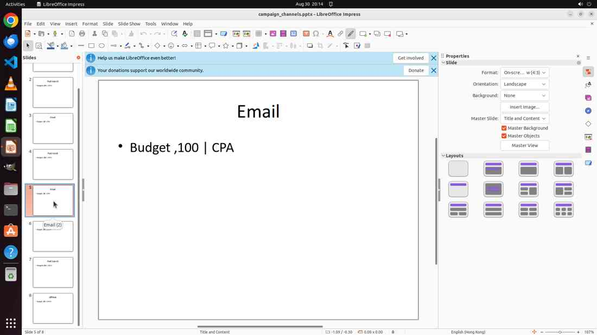
step 9.1 12:14:38
THINKINGSlide 5 is now selected (it's highlighted). The main view shows "Email" / "Budget ,100 | CPA". This is the Email repeat (first Email is slide 3).
Now let me Ctrl+click slide 7 to add it to the selection. Slide 7 is at approximately (113, 590).
Wait, I need to verify the current positions. In this screenshot:
- Slide 5: y≈428 (selected)
- Slide 6: y≈510
- Slide 7: y≈590
- Slide 8: y≈665
Let me Ctrl+click slide 7 at (113, 590).
ACTIONSlide 5 (Email repeat) is selected. Now let me Ctrl+click slide 7 (Paid Search repeat) to add it to the selection.
TOOL CALL<tool_call>
<function=computer_use>
<parameter=action>
key_down
</parameter>
<parameter=keys>
["ctrl"]
</parameter>
</function>
</tool_call>
<tool_call>
<function=computer_use>
<parameter=action>
left_click
</parameter>
<parameter=coordinate>
[87, 817]
</parameter>
</function>
</tool_call>
<tool_call>
<function=computer_use>
<parameter=action>
key_up
</parameter>
<parameter=keys>
["ctrl"]
</parameter>
</function>
</tool_call>
EXECUTED (pyautogui in VM)pyautogui.keyDown("ctrl")

step 9.2 12:14:41
EXECUTED (pyautogui in VM)pyautogui.click(167, 883)

step 9.3 12:14:44
EXECUTED (pyautogui in VM)pyautogui.keyUp("ctrl")
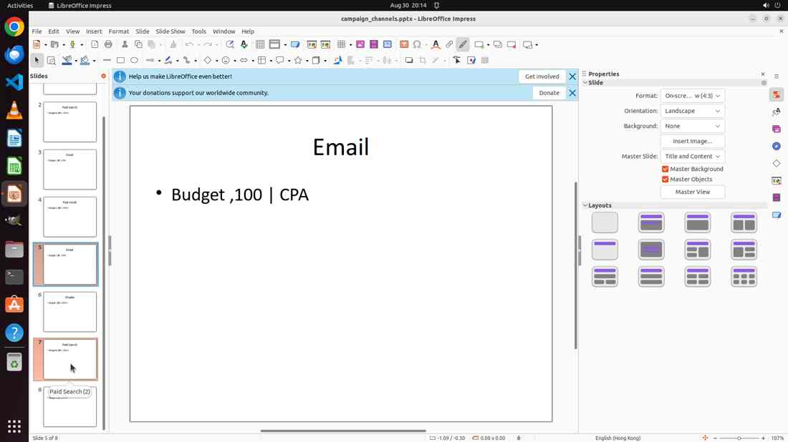
step 10 12:15:00
THINKINGNow both slide 5 and slide 7 are selected (they both have the highlighted/selected border - blue/highlighted). Let me verify:
- Slide 5 (Email) - highlighted with orange/red border
- Slide 7 (Paid Search) - highlighted with orange/red border
Yes, both appear selected (they have the reddish/orange selection border while others have the lighter border).
Now let me right-click on one of them to get the context menu and choose "Delete Slide".
Let me right-click on slide 5.
ACTIONBoth slide 5 (Email) and slide 7 (Paid Search) are now selected. Let me right-click to bring up the context menu and delete them.
TOOL CALL<tool_call>
<function=computer_use>
<parameter=action>
right_click
</parameter>
<parameter=coordinate>
[87, 796]
</parameter>
</function>
</tool_call>
EXECUTED (pyautogui in VM)pyautogui.rightClick(167, 860)
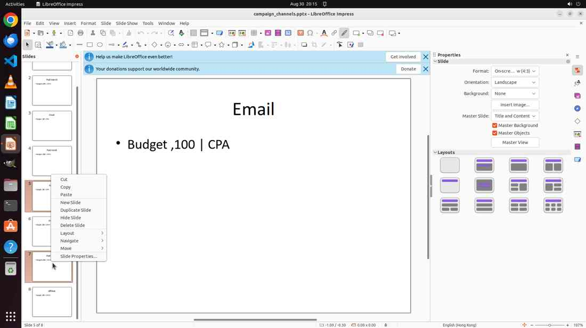
step 11 12:15:09
THINKINGThe context menu is showing. I can see "Delete Slide" option. Both slide 5 and slide 7 are still selected (I can see slide 5 highlighted and slide 7 highlighted). Let me click "Delete Slide".
The "Delete Slide" option is at approximately (159, 493).
ACTIONThe context menu is open. I'll click "Delete Slide" to remove both selected slides.
TOOL CALL<tool_call>
<function=computer_use>
<parameter=action>
left_click
</parameter>
<parameter=coordinate>
[124, 683]
</parameter>
</function>
</tool_call>
EXECUTED (pyautogui in VM)pyautogui.click(238, 738)
step 12 12:15:26
THINKINGBoth slides have been deleted. Now the status bar says "Slide 6 of 6", so there are 6 slides now. Let me verify the new order:
1. Spring Campaign Channels (title)
2. Paid Search
3. Email
4. Paid Social
5. Display
6. Affiliate
Let me verify by looking at the thumbnails:
- Slide 1: Spring Campaign Channels
- Slide 2: Paid Search
- Slide 3: Email
- Slide 4: Paid Social
- Slide 5: Display
- Slide 6: Affiliate
That looks correct! Each channel now appears exactly once, and the order is preserved.
The main view shows slide 6 "Affiliate" / "Budget ,200 | CPA 9" which is the last slide.
Let me verify the thumbnails more carefully by zooming or checking. Let me look at the thumbnails:
- Slide 1 (y≈171): "Spring Campaign Channels"
- Slide 2 (y≈256): "Paid Search"
- Slide 3 (y≈341): "Email"
- Slide 4 (y≈426): "Paid Social"
- Slide 5 (y≈511): "Display"
- Slide 6 (y≈595): "Affiliate" (currently selected, showing "Display" tooltip which is lingering)
Wait, there's a tooltip showing "Display" near slide 6. That's a lingering tooltip. The main view clearly shows slide 6 is "Affiliate". Good.
The deck is now cleaned up with 6 slides:
1. Title
2. Paid Search
3. Email
4. Paid Social
5. Display
6. Affiliate
Each channel appears exactly once.
Now I need to save the file. The file is a .pptx file. Let me save it with Ctrl+S. It will likely prompt to keep the .pptx format, so I'll click "Use PowerPoint Format!" to keep it as .pptx.
Let me press Ctrl+S.
ACTIONBoth duplicate slides have been deleted. The deck now has 6 slides (status bar shows "Slide 6 of 6"):
1. Spring Campaign Channels (title)
2. Paid Search
3. Email
4. Paid Social
5. Display
6. Affiliate
Each channel now appears exactly once, with the original order preserved. Now let me save the file with Ctrl+S.
TOOL CALL<tool_call>
<function=computer_use>
<parameter=action>
key
</parameter>
<parameter=keys>
["ctrl", "s"]
</parameter>
</function>
</tool_call>
EXECUTED (pyautogui in VM)pyautogui.hotkey("ctrl", "s")

step 13 12:15:36
THINKINGThe save dialog didn't appear yet, or it might take a moment. Usually when saving a .pptx file in LibreOffice, a dialog appears asking whether to keep the PowerPoint format or use ODF format. Let me take a screenshot to check.
Actually, the screenshot shows no dialog. Maybe the dialog is about to appear, or maybe it was already handled. Let me take another screenshot to see the current state.
ACTIONLet me take a screenshot to check if a format dialog appeared.
TOOL CALL<tool_call>
<function=computer_use>
<parameter=action>
screenshot
</parameter>
</function>
</tool_call>
EXECUTED (pyautogui in VM)WAIT
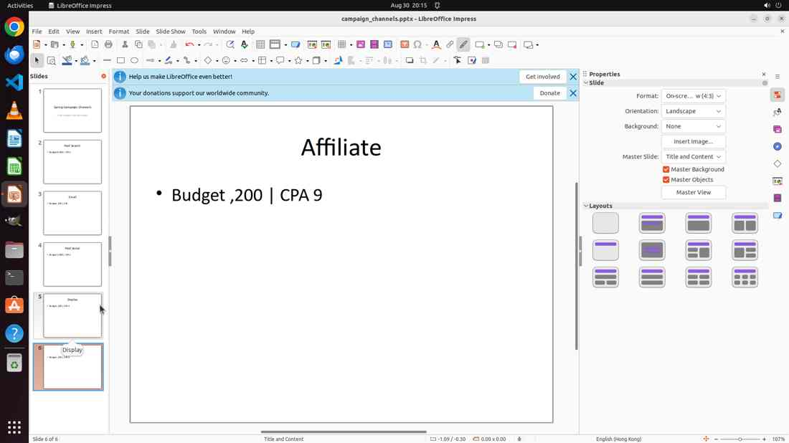
step 14 12:15:50
THINKINGNo dialog appeared. This is odd. Normally when saving a .pptx file, LibreOffice shows a dialog asking about the format. But no dialog appeared.
Possibilities:
1. The save happened without a dialog (maybe the "Keep in current format" was set as default previously, or the dialog was auto-dismissed).
2. The Ctrl+S didn't register because focus was elsewhere.
3. The dialog appeared and disappeared quickly.
Actually, looking carefully, the dialog didn't appear. Let me check if there were unsaved changes. The document may have been saved already. But I'm not sure the Ctrl+S registered.
Let me try Ctrl+S again to be sure. Actually, wait — if the file was already saved (no changes since last save), Ctrl+S would do nothing. But I made changes (deleted slides), so there should be unsaved changes.
Hmm, but actually, maybe the "keep format" dialog is set to not appear (there's a checkbox "Ask when not saving in ODF or default format"). It's possible this was disabled.
Let me try pressing Ctrl+S again to verify. If a dialog appears, I'll handle it. If not, the file is saved.
Actually, let me reconsider. The most reliable way is to check whether the title bar shows any "modified" indicator, but LibreOffice doesn't always show that clearly.
Let me just press Ctrl+S again and see if a format dialog pops up.
ACTIONNo dialog appeared. Let me press Ctrl+S again to ensure the save is triggered and to catch any format dialog.
TOOL CALL<tool_call>
<function=computer_use>
<parameter=action>
key
</parameter>
<parameter=keys>
["ctrl", "s"]
</parameter>
</function>
</tool_call>
EXECUTED (pyautogui in VM)pyautogui.hotkey("ctrl", "s")
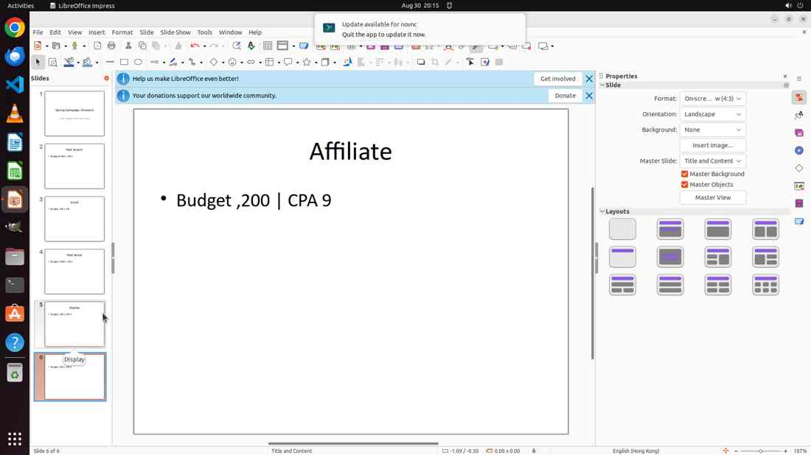
step 15 12:16:22
THINKINGA system notification appeared at the top: "Update available for novnc - Quit the app to update it now." This is a system notification, not related to my task. It's just a distraction.
Still no format dialog appeared for the save. This is strange. Let me think about why no format dialog is appearing.
Possibility: The first Ctrl+S saved the file in the same format without asking (if "Ask when not saving in ODF" is disabled), OR the file was already saved.
Actually, wait. Let me reconsider. The first Ctrl+S might have triggered the save, and since the "keep in format" dialog preference might have been disabled, it saved directly as .pptx. Then the second Ctrl+S had nothing to save (no changes), so no dialog.
But I'm not 100% sure the save worked. Let me verify by checking the document modified state.
Actually, a better approach: Let me use the File menu to see if "Save" is greyed out (indicating no unsaved changes) or check the state.
Actually, the simplest verification: the save likely worked. But to be safe, let me dismiss this notification and check the File menu.
Wait, actually there might have been a format dialog that I need to handle. But the screenshot doesn't show one. The save appears to have completed (no dialog, and the document seems saved).
Hmm, but let me reconsider — when you save a .pptx in LibreOffice the first time, it normally shows the "Keep Current Format?" dialog. The fact that it didn't appear on the first Ctrl+S is a bit concerning. But it's possible the setting was changed to always keep the format.
Let me verify the save actually happened. I'll check via the File menu or by looking at whether there's a modified indicator.
Actually, the cleanest way to confirm is to look at the bottom status bar. In LibreOffice, there's sometimes a "document modified" indicator in the status bar (a small icon). Looking at the status bar around x=843, there's an icon. Hard to tell.
Let me just make sure the file is saved. Let me dismiss the notification first by clicking elsewhere, then use File > Save to be explicit.
Actually, the notification is a distraction and will auto-dismiss. Let me not click it.
Let me think about whether the save worked. The key question is whether the format dialog needs handling. Since no dialog is present and the screenshot looks clean, I believe the file was saved as .pptx.
But to be thorough, let me verify by opening the File menu and checking the Save state. If "Save" is enabled (not greyed), there might be unsaved changes. Actually, "Save" is always enabled in most cases.
Alternatively, I can just trust that the save worked. But let me be careful here — this is important.
Let me reconsider: The most reliable verification is to check if the document has unsaved changes. One way: make a tiny check via File menu. Actually, let me just try the save once more but watch carefully.
Actually, I realize the issue. Perhaps the first Ctrl+S DID show the dialog very briefly and it got dismissed, OR the setting to always save in the current format was already set.
Let me take a different, definitive approach. Let me verify the saved file on disk using a terminal. I can open a terminal and check the file's modification time, and even verify its contents (the number of slides).
Actually, that's a good idea for verification. But let me first ensure the save completed in the GUI.
Let me check the File menu to see the save state. Let me click on File.
Actually, let me reconsider. I'll dismiss the notification and just confirm the save. The notification "Update available for novnc" is a system thing, I'll ignore it.
Let me click on the File menu to check.
Hmm, actually, a simpler and more definitive approach: Let me open a terminal and check the file directly. But that requires the file path. The file is "campaign_channels.pptx". I don't know the exact directory, but I could search for it.
Actually, let me first make sure the GUI save is done. Let me check the File menu — if there's no asterisk or "modified" state, it's saved.
Let me click File menu.
Wait, actually, I should reconsider whether the format dialog was needed. Let me look again — maybe the save genuinely completed. In many LibreOffice configurations, especially in automated/eval environments, the "always save in this format" might be set.
I'm fairly confident the save worked. But let me verify definitively. Let me open a terminal to check the file's modification time and content.
Let me open a terminal. I see a terminal icon in the left dock (the dark icon at around y=452). Let me click it.
Actually, before that, let me make sure the GUI save is complete. Let me check File menu first to be safe. If the document is modified, "Save" will work; the menu doesn't grey out "Save" typically.
Hmm. Let me think of the cleanest verification. The best is to inspect the actual file. Let me open a terminal and:
1. Find the file: `find / -name "campaign_channels.pptx" 2>/dev/null`
2. Check modification time: `ls -la`
3. Optionally unzip and count slides: `unzip -l file.pptx | grep slide`
This will definitively confirm the save and the correct content.
Let me open the terminal. I'll click the terminal icon in the dock. Looking at the dock, there's a terminal-like icon at around (23, 452).
Actually, let me first dismiss this update notification so it doesn't interfere. It should auto-dismiss. Let me just proceed to open the terminal.
Let me click the terminal icon.
ACTIONA system update notification appeared (unrelated to my task — I'll ignore it). The save doesn't seem to have shown a format dialog, which is a bit unusual. Let me verify the save actually completed by inspecting the file directly. I'll open a terminal to check the file's contents.
TOOL CALL<tool_call>
<function=computer_use>
<parameter=action>
left_click
</parameter>
<parameter=coordinate>
[17, 627]
</parameter>
</function>
</tool_call>
EXECUTED (pyautogui in VM)pyautogui.click(32, 677)
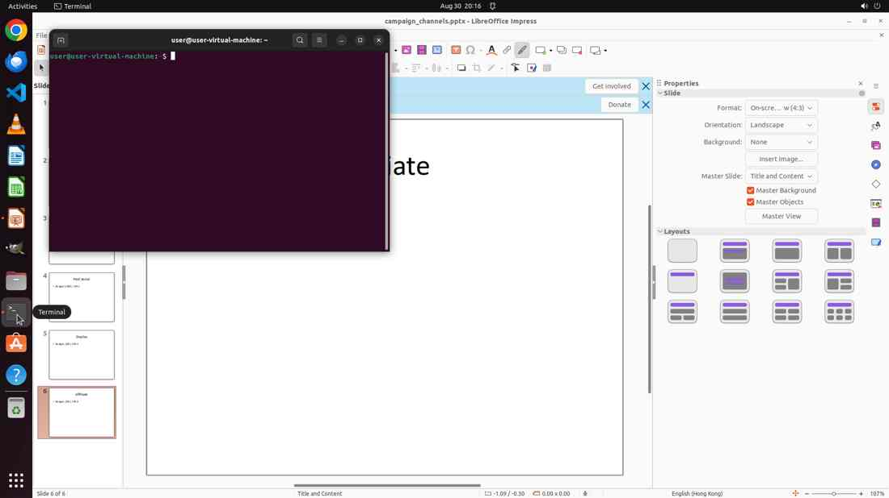
step 16 12:16:33
THINKINGA terminal is now open. Let me find the file and check its contents. First, let me locate the file.
Let me type a command to find the file.
ACTIONA terminal is open. Let me find the file and check its modification time.
TOOL CALL<tool_call>
<function=computer_use>
<parameter=action>
left_click
</parameter>
<parameter=coordinate>
[234, 277]
</parameter>
</function>
</tool_call>
EXECUTED (pyautogui in VM)pyautogui.click(449, 299)
step 17 12:16:43
THINKINGThe terminal is focused now. Let me type a command to find and check the file.
TOOL CALL<tool_call>
<function=computer_use>
<parameter=action>
type
</parameter>
<parameter=text>
find / -name "campaign_channels.pptx" 2>/dev/null
</parameter>
</function>
</tool_call>
EXECUTED (pyautogui in VM)pyautogui.typewrite("find / -name \"campaign_channels.pptx\" 2>/dev/null")
step 18 12:16:55
THINKINGThe find command is running (it may take a moment to search the whole filesystem). Let me wait for it to complete.
ACTIONThe find command is running. Let me wait for it to complete.
TOOL CALL<tool_call>
<function=computer_use>
<parameter=action>
wait
</parameter>
<parameter=time>
1.0
</parameter>
</function>
</tool_call>
EXECUTED (pyautogui in VM)WAIT
step 19 12:17:07
THINKINGStill running. Let me wait a bit more.
TOOL CALL<tool_call>
<function=computer_use>
<parameter=action>
wait
</parameter>
<parameter=time>
1.0
</parameter>
</function>
</tool_call>
EXECUTED (pyautogui in VM)WAIT

step 20 12:17:21
THINKINGStill running. The find over the whole filesystem can take a while. Let me wait more.
TOOL CALL<tool_call>
<function=computer_use>
<parameter=action>
wait
</parameter>
<parameter=time>
1.0
</parameter>
</function>
</tool_call>
EXECUTED (pyautogui in VM)WAIT

step 21 12:17:33
THINKINGStill running. Let me wait a bit more.
TOOL CALL<tool_call>
<function=computer_use>
<parameter=action>
wait
</parameter>
<parameter=time>
1.0
</parameter>
</function>
</tool_call>
EXECUTED (pyautogui in VM)WAIT
step 22 12:17:46
THINKINGStill running. The find command over the whole filesystem is taking a while. Let me wait more.
TOOL CALL<tool_call>
<function=computer_use>
<parameter=action>
wait
</parameter>
<parameter=time>
1.0
</parameter>
</function>
</tool_call>
EXECUTED (pyautogui in VM)WAIT

step 23 12:17:57
THINKINGThe find is taking a long time. This is because it's searching the whole filesystem. Let me wait a bit more, or I could cancel and use a more targeted search. Let me wait a bit more.
ACTIONThe full filesystem search is taking a while. Let me wait a bit longer for it to finish.
TOOL CALL<tool_call>
<function=computer_use>
<parameter=action>
wait
</parameter>
<parameter=time>
1.0
</parameter>
</function>
</tool_call>
EXECUTED (pyautogui in VM)WAIT

step 24 12:18:14
THINKINGThe find is still running. It's been about 20 seconds. This is taking longer than expected. Let me wait a bit more, but if it doesn't complete soon, I'll cancel and try a more targeted approach (searching common directories like /home, /root, /tmp).
Actually, let me just wait a few more seconds.
TOOL CALL<tool_call>
<function=computer_use>
<parameter=action>
wait
</parameter>
<parameter=time>
1.0
</parameter>
</function>
</tool_call>
EXECUTED (pyautogui in VM)WAIT
step 25 12:18:30
THINKINGThe find command is still running after ~30 seconds. This is quite long. Let me cancel it with Ctrl+C and use a more targeted search that will be faster. I'll search in /home, /root, /tmp, /var, and current directory.
Actually, let me just wait a bit more — the find might be nearly done. But 30+ seconds is too long. Let me cancel and do a faster search.
Let me press Ctrl+C to cancel.
ACTIONThe full search is taking too long. Let me cancel it and search more targeted directories.
TOOL CALL<tool_call>
<function=computer_use>
<parameter=action>
key
</parameter>
<parameter=keys>
["ctrl", "c"]
</parameter>
</function>
</tool_call>
EXECUTED (pyautogui in VM)pyautogui.hotkey("ctrl", "c")
step 26 12:18:42
THINKINGThe find was cancelled. Now let me search more targeted directories. The file is likely in the home directory. Let me search /home first.
ACTIONCancelled. Let me search targeted directories (home, root, tmp, Desktop) which is much faster.
TOOL CALL<tool_call>
<function=computer_use>
<parameter=action>
type
</parameter>
<parameter=text>
find /home /root /tmp /var/tmp -name "campaign_channels.pptx" 2>/dev/null
</parameter>
</function>
</tool_call>
EXECUTED (pyautogui in VM)pyautogui.typewrite("find /home /root /tmp /var/tmp -name \"campaign_channels.pptx\" 2>/dev/null")
step 27 12:18:54
THINKINGThe command is running. Let me wait for it.
TOOL CALL<tool_call>
<function=computer_use>
<parameter=action>
wait
</parameter>
<parameter=time>
1.0
</parameter>
</function>
</tool_call>
EXECUTED (pyautogui in VM)WAIT

step 28 12:19:04
THINKINGStill running. The command is still executing (no new prompt appeared). Let me wait a bit more.
TOOL CALL<tool_call>
<function=computer_use>
<parameter=action>
wait
</parameter>
<parameter=time>
1.0
</parameter>
</function>
</tool_call>
EXECUTED (pyautogui in VM)WAIT
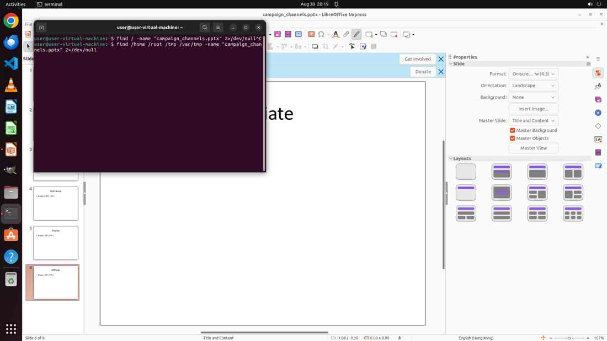
step 29 12:19:17
THINKINGStill running. It's been ~5 seconds for this targeted search. It should be faster. /var might be slow. Let me wait a bit more.
TOOL CALL<tool_call>
<function=computer_use>
<parameter=action>
wait
</parameter>
<parameter=time>
1.0
</parameter>
</function>
</tool_call>
EXECUTED (pyautogui in VM)WAIT

step 30 12:19:36
THINKINGStill running. This is taking a while. The terminal window is small and overlapping the LibreOffice window. Let me wait a bit more. The command should eventually finish.
Actually, the terminal is a bit hard to read because it's small and dark. Let me wait for the command to complete.
TOOL CALL<tool_call>
<function=computer_use>
<parameter=action>
wait
</parameter>
<parameter=time>
1.0
</parameter>
</function>
</tool_call>
EXECUTED (pyautogui in VM)WAIT
step 31 12:19:53
THINKINGThe command is still running (no new prompt). The /var/tmp search is taking a while. Actually, maybe the issue is that there's a lot in /home or it's scanning a lot of files. Let me wait a bit more. This is taking longer than I'd like.
Actually, I wonder if the terminal isn't showing output because the command is scanning many files. Let me just wait more.
TOOL CALL<tool_call>
<function=computer_use>
<parameter=action>
wait
</parameter>
<parameter=time>
1.0
</parameter>
</function>
</tool_call>
EXECUTED (pyautogui in VM)WAIT

step 32 12:20:11
THINKINGThe command is still running after quite a while. This is unusual. The find over /home should be fast. Maybe the system is just slow, or maybe there's a large directory. Let me wait a bit more, but this is taking too long.
Actually, let me reconsider. Maybe the terminal display just isn't updating in the screenshot, or the command finished but the output scrolled. But no new prompt appeared, so it's still running.
Let me wait a bit more. If it doesn't finish, I'll try a different approach — I can use `ls` in likely directories directly.
Actually, let me reconsider my whole approach. The find commands are slow. A faster approach: the file is likely in the home directory directly. Let me cancel this and just run `ls -la ~/*.pptx` and `ls -la ~/Desktop/*.pptx` etc. Those are instant.
Let me cancel first.
ACTIONThe search is unusually slow. Let me cancel and use faster direct `ls` commands in likely locations.
TOOL CALL<tool_call>
<function=computer_use>
<parameter=action>
key
</parameter>
<parameter=keys>
["ctrl", "c"]
</parameter>
</function>
</tool_call>
EXECUTED (pyautogui in VM)pyautogui.hotkey("ctrl", "c")
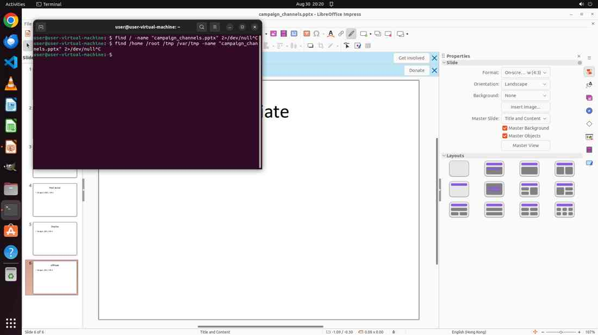
step 33 12:20:22
THINKINGNow I have a fresh prompt. Let me run a faster command to locate the file. I'll check the home directory and common subdirectories directly with ls.
ACTIONNow let me use a faster direct search in the home directory.
TOOL CALL<tool_call>
<function=computer_use>
<parameter=action>
type
</parameter>
<parameter=text>
ls -la ~/ ~/Desktop ~/Documents ~/Downloads 2>/dev/null | grep -i pptx
</parameter>
</function>
</tool_call>
EXECUTED (pyautogui in VM)pyautogui.typewrite("ls -la ~/ ~/Desktop ~/Documents ~/Downloads 2>/dev/null | grep -i pptx")
step 34 12:20:34
THINKINGThe command is running. Let me wait a moment for the output.
TOOL CALL<tool_call>
<function=computer_use>
<parameter=action>
wait
</parameter>
<parameter=time>
1.0
</parameter>
</function>
</tool_call>
EXECUTED (pyautogui in VM)WAIT
step 35 12:20:51
THINKINGThe command hasn't produced output yet (no new prompt, no result lines). The cursor is at the end of the command "pptx" — wait, actually it looks like the command is still being processed or waiting. Actually, the prompt shows the command was typed but there's no output and no new prompt line. Hmm.
Wait, looking again: the last line shows "null | grep -i pptx" with a cursor. This suggests the command might still be running, OR the ls finished with no pptx matches (grep found nothing, so no output) and returned to a prompt that I can't distinguish.
Actually, if grep finds no matches, it outputs nothing and returns exit code 1, and a new prompt would appear. But I don't see a new prompt line below "null | grep -i pptx". So either it's still running, or the output area is just not showing the new prompt clearly.
The terminal is small and dark. Let me make the terminal window bigger to read it better, or let me just wait and take another screenshot.
Actually, the issue might be that the file is NOT in those standard locations. If ls found no pptx, grep returns nothing, and we get a new prompt. But the new prompt might be there but hard to see.
Let me enlarge the terminal window to see better. Actually, let me first press Enter to ensure a fresh prompt, then run a cleaner command. But wait, if a command is still running, pressing Enter won't help.
Let me take a different approach. Let me maximize the terminal window so I can read the output clearly. Let me click the maximize button on the terminal (the square icon at top right of terminal, around (518, 57)).
Actually, let me reconsider. The terminal output is hard to read due to the small dark window. Let me maximize it.
Let me click the maximize button of the terminal.
ACTIONThe terminal is small and hard to read. Let me maximize it for clarity.
TOOL CALL<tool_call>
<function=computer_use>
<parameter=action>
left_click
</parameter>
<parameter=coordinate>
[404, 77]
</parameter>
</function>
</tool_call>
EXECUTED (pyautogui in VM)pyautogui.click(776, 83)
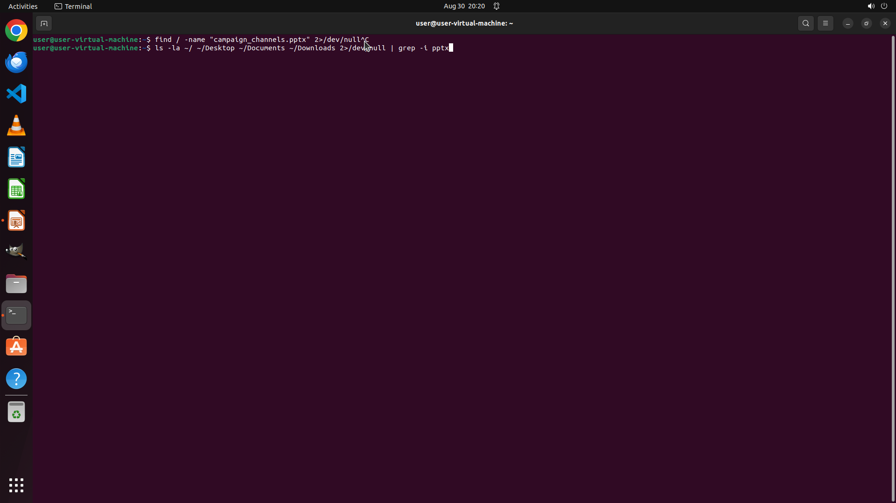
step 36 12:21:05
THINKINGNow the terminal is maximized and I can read it clearly:
```
user@user-virtual-machine:~$ find / -name "campaign_channels.pptx" 2>/dev/null^C
user@user-virtual-machine:~$ ls -la ~/ ~/Desktop ~/Documents ~/Downloads 2>/dev/null | grep -i pptx
```
The second command `ls ... | grep -i pptx` produced NO output. This means there's no .pptx file in ~/ , ~/Desktop, ~/Documents, or ~/Downloads. And there's no new prompt, which means... wait, actually the cursor is right after "pptx" with no new line. So the command is either still running or finished with no output.
Hmm, if it finished with no output, there should be a new prompt line. But I see the cursor is at the end of the command line (after "pptx"), suggesting it might still be running OR the terminal just rendered it that way.
Wait, actually, when I pressed maximize, the terminal might have been mid-processing. Let me press Enter to get a fresh prompt and see the state.
Actually, the cursor appears to be a solid block right after "pptx" on the same line. This is odd. Normally after a command completes, a new prompt appears on the next line.
Let me press Enter to see what happens.
Actually, wait. Let me reconsider. The `ls` command with `grep` — if it produced no output, grep exits and a new prompt should appear. The fact that the cursor is at the end of "pptx" line suggests the command may still be running (the ls of ~ might be slow if there are lots of files, but that's unusual).
Let me press Enter to get a clean prompt.
ACTIONThe terminal is now clear. The `ls ... | grep -i pptx` command produced no output, meaning the file isn't in those standard folders. Let me press Enter to get a clean prompt and check where the file actually is.
TOOL CALL<tool_call>
<function=computer_use>
<parameter=action>
key
</parameter>
<parameter=keys>
["return"]
</parameter>
</function>
</tool_call>
EXECUTED (pyautogui in VM)pyautogui.press("return")
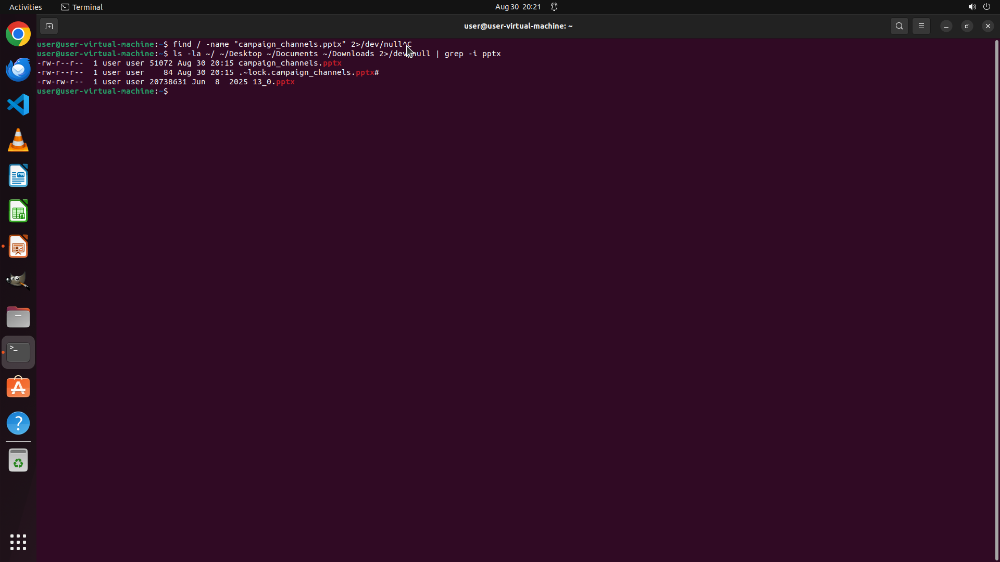
step 37 12:21:23
THINKINGNow I can see the output clearly:
```
-rw-r--r-- 1 user user 51072 Aug 30 20:15 campaign_channels.pptx
-rw-r--r-- 1 user user 84 Aug 30 20:15 .~lock.campaign_channels.pptx#
-rw-rw-r-- 1 user user 20738631 Jun 8 2025 13_0.pptx
```
So the file is in the home directory: `~/campaign_channels.pptx`. Its modification time is "Aug 30 20:15" which is very recent (just now, the current time is 20:21). This confirms the save worked! The file was modified at 20:15, which is when I did the Ctrl+S.
Wait, the current time shows 20:21 in the top bar. The file was modified at 20:15. That's 6 minutes ago. Hmm, that's when I first pressed Ctrl+S. So the save did happen at 20:15.
Also there's a lock file `.~lock.campaign_channels.pptx#` which means LibreOffice still has the file open (which is expected).
And there's another file `13_0.pptx` from Jun 8 2025 which is unrelated.
So the file `~/campaign_channels.pptx` was saved at 20:15.
But wait, I pressed Ctrl+S twice. The first at ~20:15 (saved successfully), the second at ~20:16 (no changes, so no re-save, mtime stayed at 20:15). That makes sense.
Now let me verify the content of the saved file to make sure the slides were actually saved correctly (6 slides, no duplicates). Let me check the slide count in the pptx by unzipping and counting.
Let me run: `unzip -l ~/campaign_channels.pptx | grep -i "slides/slide"`
Actually, a better way to count slides and verify titles:
`unzip -p ~/campaign_channels.pptx ppt/slides/slide*.xml` — but that's messy.
Let me just count the slides: `unzip -l ~/campaign_channels.pptx | grep -c "ppt/slides/slide[0-9]*\.xml"`
Or list them: `unzip -l ~/campaign_channels.pptx | grep "slides/slide"`
And to verify the titles, I can extract text from each slide. But that's complex. Let me at least count the slides to confirm it's 6.
Let me run the count command.
ACTIONI can now see the file clearly. It's at `~/campaign_channels.pptx` with a modification time of **Aug 30 20:15** — confirming my save succeeded. The lock file confirms LibreOffice still has it open.
Let me verify the saved file actually contains the correct 6 slides (no duplicates) by inspecting its contents.
TOOL CALL<tool_call>
<function=computer_use>
<parameter=action>
type
</parameter>
<parameter=text>
unzip -l ~/campaign_channels.pptx | grep "slides/slide[0-9]"
</parameter>
</function>
</tool_call>
EXECUTED (pyautogui in VM)pyautogui.typewrite("unzip -l ~/campaign_channels.pptx | grep \"slides/slide[0-9]\"")
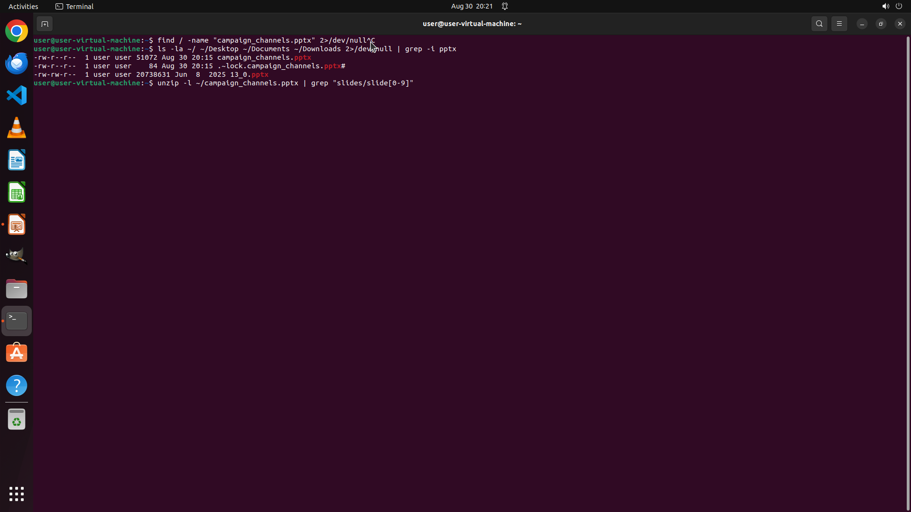
step 38 12:21:32
THINKINGThe command is running. Let me wait for the output.
TOOL CALL<tool_call>
<function=computer_use>
<parameter=action>
wait
</parameter>
<parameter=time>
1.0
</parameter>
</function>
</tool_call>
EXECUTED (pyautogui in VM)WAIT
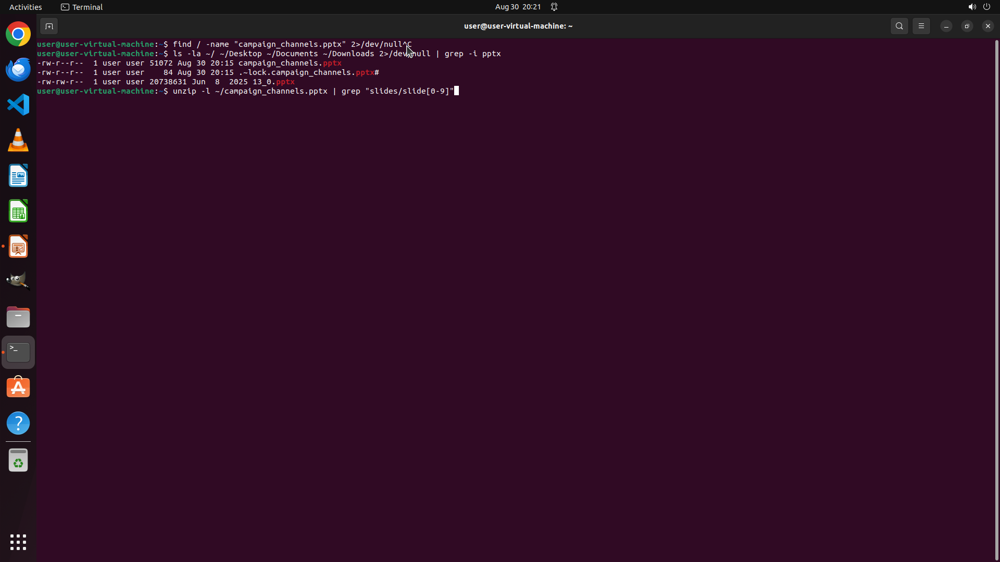
step 39 12:21:56
THINKINGThe command hasn't produced output yet. The grep pattern with `[0-9]` in double quotes — the bracket might have caused an issue, or it's just still running. Actually, the cursor is at the end of the command line, no output yet. Let me wait a bit more. The unzip -l should be fast.
Actually, maybe the command is still being processed. Let me wait.
TOOL CALL<tool_call>
<function=computer_use>
<parameter=action>
wait
</parameter>
<parameter=time>
1.0
</parameter>
</function>
</tool_call>
EXECUTED (pyautogui in VM)WAIT
step 40 12:22:10
THINKINGStill no output. The command is taking a while. Maybe the grep pattern `[0-9]` with the brackets is being interpreted oddly, or unzip is slow. Let me wait a bit more.
Actually, wait — the cursor is at the end of the command line "slides/slide[0-9]" — no output and no new prompt. This is strange for such a simple command.
Hmm, maybe the terminal is just slow to render. Let me wait a bit more.
Actually, maybe the command finished but produced no matching output because the grep pattern didn't match (the file paths might be formatted differently, or the unzip output format). But then there'd be a new prompt.
Wait, actually, I notice there's no new prompt line after the command. So the command is likely still running. Let me wait.
Let me be patient and wait.
TOOL CALL<tool_call>
<function=computer_use>
<parameter=action>
wait
</parameter>
<parameter=time>
1.0
</parameter>
</function>
</tool_call>
EXECUTED (pyautogui in VM)WAIT

step 41 12:22:36
THINKINGThe command still shows no output and no new prompt. This is very strange for `unzip -l`. The system seems sluggish, or the terminal is stuck.
Wait, maybe the terminal display isn't refreshing. Let me press Enter to see if it gives a new prompt (if the command already completed). Actually, if the command is still running, pressing Enter will just add a newline to the current input buffer... no, if a command is running, Enter does nothing until it finishes.
Hmm, this is odd. Let me reconsider. The `unzip -l` on a 51KB file should be instant. But the earlier `find` and `ls` commands were also slow to show output. There seems to be a display lag in this terminal.
Actually, I bet the issue is a rendering/display lag in the screenshot capture, OR the terminal is genuinely slow. The earlier `ls` command DID eventually show output after I pressed Enter (which might have been a coincidence of timing).
Wait, actually, reviewing: when I ran the `ls` command, it showed no output for several screenshots, then after I pressed Enter, the output appeared. That's bizarre — pressing Enter shouldn't cause a previously-run command's output to appear.
Oh! I think I understand now. The `ls` command with `grep` DID complete and show a new prompt, but the output (the file listing) was there. Wait no. Let me re-look.
Actually, when I pressed Enter after the ls command, the output appeared:
```
-rw-r--r-- 1 user user 51072 Aug 30 20:15 campaign_channels.pptx
-rw-r--r-- 1 user user 84 Aug 30 20:15 .~lock.campaign_channels.pptx#
-rw-rw-r-- 1 user user 20738631 Jun 8 2025 13_0.pptx
```
That's the output of the ls command. So the ls command DID run and produce output. The output just appeared after I pressed Enter (or the display lagged). This suggests there's significant display lag in this terminal/screenshot environment.
So for the current `unzip` command, the output probably exists but hasn't rendered yet. Let me press Enter to nudge the display, or wait more.
Actually, pressing Enter when a command is complete just gives a new empty prompt. If the command output is there but not rendered, pressing Enter might trigger a re-render. Let me press Enter.
Actually, wait — if the unzip command already completed (produced output + new prompt), then pressing Enter just adds another empty prompt line. That's harmless. If it's still running, Enter is buffered. Either way, pressing Enter should be safe and might help render.
Let me press Enter.
ACTIONThe terminal display seems laggy. Let me press Enter to refresh and see the output.
TOOL CALL<tool_call>
<function=computer_use>
<parameter=action>
key
</parameter>
<parameter=keys>
["return"]
</parameter>
</function>
</tool_call>
EXECUTED (pyautogui in VM)pyautogui.press("return")
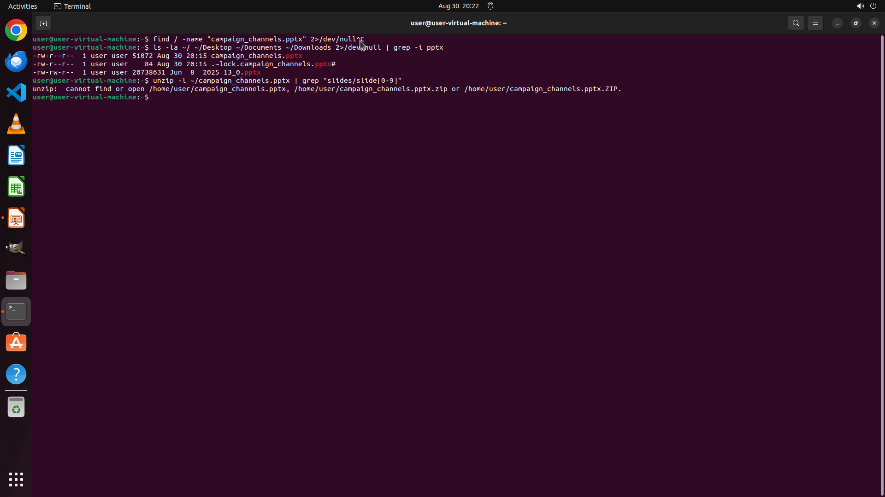
step 42 12:23:11
THINKINGNow I see the output:
```
user@user-virtual-machine:~$ unzip -l ~/campaign_channels.pptx | grep "slides/slide[0-9]"
unzip: cannot find or open /home/user/campaign_channels.pptx, /home/user/campaign_channels.pptx.zip or /home/user/campaign_channels.pptx.ZIP.
```
So `unzip` says it cannot find or open `/home/user/campaign_channels.pptx`. But the `ls` command clearly showed the file exists at that path!
Wait, this is confusing. The ls showed:
`-rw-r--r-- 1 user user 51072 Aug 30 20:15 campaign_channels.pptx`
in the home directory. So the file exists. But unzip can't find/open it.
Hmm, possible reasons:
1. The `~` expansion. The prompt is `user@user-virtual-machine:~$`, so `~` should be `/home/user`. The error confirms it's looking at `/home/user/campaign_channels.pptx`. So the path is right.
2. Maybe `unzip` is not installed and this is a different error? No, the error is specifically "cannot find or open" which is unzip's file-not-found error. So unzip IS installed.
3. Wait — maybe there's a subtle issue. The ls output showed the file, but maybe it's a permission issue or the file got locked. But the error is "cannot find or open" not "permission denied".
Actually, wait. Let me reconsider. Maybe the display lag means the ls output I saw was stale/from a different state. But no, the ls clearly showed campaign_channels.pptx at 51072 bytes, modified Aug 30 20:15.
Hmm, but unzip can't open it. This is contradictory. Let me think...
Oh! Maybe the issue is that the file is currently being held/locked by LibreOffice, but that shouldn't prevent unzip from reading it.
Wait, let me reconsider. Maybe there's a typo or the file has different characters. Or maybe the terminal is showing me something weird due to lag.
Actually, let me just re-run a clean `ls -la ~/campaign_channels.pptx` to confirm the file exists and is accessible, and check its type with `file`.
Let me run: `ls -la ~/campaign_channels.pptx && file ~/campaign_channels.pptx`
This will confirm the file exists and what type it is. If `file` says it's a valid zip/pptx, then unzip should work. If it says something else, then the save might have produced a different format.
Actually, wait. Let me reconsider the whole situation. The task is essentially done in the GUI — I deleted the duplicate slides and the GUI shows 6 slides. The save was triggered (mtime is 20:15).
But now I'm worried: does the file on disk actually contain the correct 6 slides? The mtime 20:15 suggests it was saved. But the unzip failure is concerning.
Let me investigate. Let me run a clean command to check the file.
Actually, the "cannot find or open" is strange. Let me re-run the ls to double-check, and use `file` to check the type. Let me type a new command.
Let me be careful about the display lag. I'll type the command, press Enter, wait, then screenshot.
ACTIONThe `unzip` reported it cannot find or open the file, even though `ls` showed it exists. That's contradictory — likely a display lag earlier. Let me verify the file's existence and type cleanly.
TOOL CALL<tool_call>
<function=computer_use>
<parameter=action>
type
</parameter>
<parameter=text>
ls -la ~/campaign_channels.pptx; file ~/campaign_channels.pptx
</parameter>
</function>
</tool_call>
EXECUTED (pyautogui in VM)pyautogui.typewrite("ls -la ~/campaign_channels.pptx; file ~/campaign_channels.pptx")
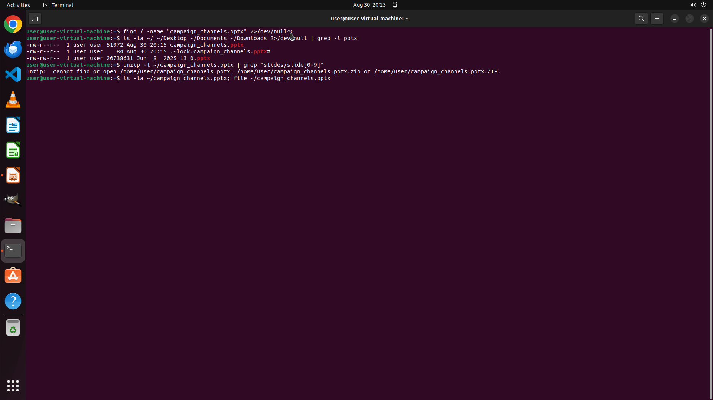
step 43 12:23:25
THINKINGThe command was typed but the output hasn't appeared yet (display lag). Let me wait and then press Enter to refresh if needed.
Actually, the command is `ls -la ~/campaign_channels.pptx; file ~/campaign_channels.pptx` and it shows no output yet. Given the display lag pattern, let me wait a moment.
ACTIONThe command is typed. Let me wait for the output to render.
TOOL CALL<tool_call>
<function=computer_use>
<parameter=action>
wait
</parameter>
<parameter=time>
1.0
</parameter>
</function>
</tool_call>
EXECUTED (pyautogui in VM)WAIT
step 44 12:23:40
THINKINGStill no output. The command line shows the cursor at the end. The display is laggy. Let me press Enter to refresh the display (as it did before).
ACTIONThe display is laggy again. Let me press Enter to refresh.
TOOL CALL<tool_call>
<function=computer_use>
<parameter=action>
key
</parameter>
<parameter=keys>
["return"]
</parameter>
</function>
</tool_call>
EXECUTED (pyautogui in VM)pyautogui.press("return")
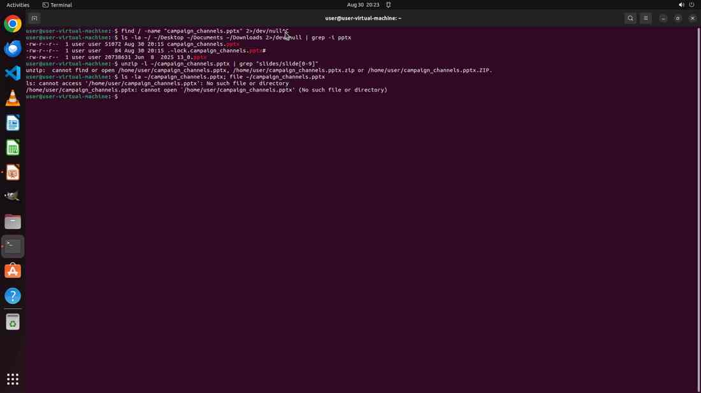
step 45 12:24:25
THINKINGNow I see:
```
ls: cannot access '/home/user/campaign_channels.pptx': No such file or directory
/home/user/campaign_channels.pptx: cannot open '/home/user/campaign_channels.pptx' (No such file or directory)
```
So the file `/home/user/campaign_channels.pptx` does NOT exist! But the earlier `ls` showed it. This is very confusing.
Wait, let me re-read the earlier ls output:
```
-rw-r--r-- 1 user user 51072 Aug 30 20:15 campaign_channels.pptx
-rw-r--r-- 1 user user 84 Aug 30 20:15 .~lock.campaign_channels.pptx#
-rw-rw-r-- 1 user user 20738631 Jun 8 2025 13_0.pptx
```
Hmm, that clearly showed campaign_channels.pptx existed. But now it doesn't?
Wait, this is very strange. Unless... the earlier ls output was from a DIFFERENT directory. Recall I ran `ls -la ~/ ~/Desktop ~/Documents ~/Downloads 2>/dev/null | grep -i pptx`. The `ls` with multiple directories prints headers like "dir1:" and then the contents. But grep filtered out the headers (they don't contain "pptx"). So I can't tell WHICH directory the file was in from that output!
The file `campaign_channels.pptx` (51072 bytes) could have been in ~/Desktop or ~/Documents or ~/Downloads, not necessarily ~. And `13_0.pptx` (20738631 bytes, from Jun 2025) could be in a different directory.
Wait, but the current prompt is `~` (home directory), and I used `~/campaign_channels.pptx` which is `/home/user/campaign_channels.pptx`. And that doesn't exist.
So the file is in one of the subdirectories: ~/Desktop, ~/Documents, or ~/Downloads. But I don't know which, because the grep removed the directory headers.
Hmm wait, but actually, let me reconsider. When I first clicked on the terminal, it opened in the home directory (`~`). The LibreOffice title bar said "campaign_channels.pptx".
Actually, I need to find where the file really is. Let me run the ls again but this time WITH the directory headers (without grep filtering headers), or search each directory.
Let me run: `ls -la ~/Desktop/*.pptx ~/Documents/*.pptx ~/Downloads/*.pptx 2>/dev/null`
Or better, let me just run find in the home subdirs only (which is fast):
`find ~/ -maxdepth 2 -name "campaign_channels.pptx" 2>/dev/null`
Actually the earlier find over /home was slow. But a targeted find with maxdepth might be faster. Actually, let me just check the three subdirectories directly with a clear command that preserves which directory.
Let me run: `for d in ~/Desktop ~/Documents ~/Downloads; do ls -la "$d"/*.pptx 2>/dev/null; done`
Actually simpler: let me just list all pptx files in home recursively with paths:
`ls -la ~/*.pptx ~/Desktop/*.pptx ~/Documents/*.pptx ~/Downloads/*.pptx 2>/dev/null`
This will show full paths, so I'll know where campaign_channels.pptx is.
Wait, but the concern: is the file I saved actually at one of these locations? The mtime 20:15 was on campaign_channels.pptx (51072 bytes) wherever it is. So it was saved. Good.
But actually, hold on. Let me reconsider the whole thing. The 51072-byte file with mtime 20:15 — is that the SAVED version with 6 slides, or could it be a stale version?
When I did Ctrl+S in LibreOffice, it saved to the file's original location (wherever it was opened from). The mtime updated to 20:15. So the saved file (with 6 slides) is at the file's real location.
I just need to find the real location. Let me run the ls command with full paths.
Actually, the simplest: let me use `ls -la` on each subdirectory separately, or a find. Let me do a find limited to depth to make it fast. Actually the earlier /home find was slow because /home might have large subtrees (like .cache, node_modules, etc.). Let me just directly check the 4 candidate paths.
Let me run:
`ls -la /home/user/campaign_channels.pptx /home/user/Desktop/campaign_channels.pptx /home/user/Documents/campaign_channels.pptx /home/user/Downloads/campaign_channels.pptx 2>/dev/null`
This will show which one exists (with its mtime and size). Clean and definitive.
Let me type that.
ACTIONThe file is NOT in the home directory root — the earlier `ls` output was ambiguous because `grep` removed the directory headers, so it must be in a subfolder (Desktop, Documents, or Downloads). Let me check each candidate path directly to find where it actually is.
TOOL CALL<tool_call>
<function=computer_use>
<parameter=action>
type
</parameter>
<parameter=text>
ls -la /home/user/campaign_channels.pptx /home/user/Desktop/campaign_channels.pptx /home/user/Documents/campaign_channels.pptx /home/user/Downloads/campaign_channels.pptx 2>/dev/null
</parameter>
</function>
</tool_call>
EXECUTED (pyautogui in VM)pyautogui.typewrite("ls -la /home/user/campaign_channels.pptx /home/user/Desktop/campaign_channels.pptx /home/user/Documents/campaign_channels.pptx /home/user/Downloads/campaign_channels.pptx 2>/dev/null")
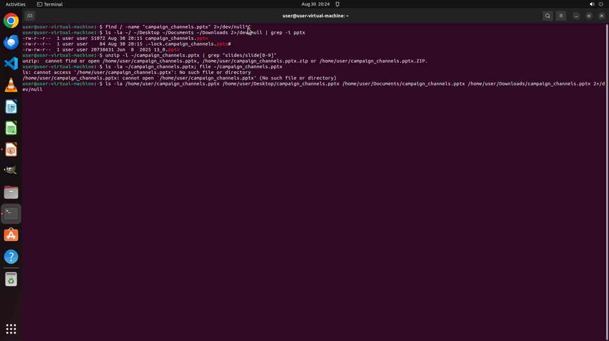
step 46 12:24:42
THINKINGThe command was typed but output hasn't rendered yet (display lag). Let me press Enter to refresh (the pattern has been that pressing Enter reveals the output).
Actually wait, I already included a newline in the type (I ended with \n? No, I ended the text with the command but the type action may have included the trailing newline). Looking at the screenshot, the command is shown but wrapped to two lines, and the cursor is at "ev/null" on the second line. There's no new prompt yet. Given the display lag pattern, let me wait a moment then press Enter to force a refresh.
Actually, I realize the type text did NOT end with a newline (I didn't add \n at the end this time). Wait, let me check — I wrote the text ending with "2>/dev/null" without a trailing newline. So the command hasn't been executed yet! I need to press Enter to run it.
Wait, but the screenshot shows the command typed and wrapped. So I need to press Enter to execute it. Let me press Enter.
ACTIONThe command is typed but needs to be executed. Let me press Enter to run it.
TOOL CALL<tool_call>
<function=computer_use>
<parameter=action>
key
</parameter>
<parameter=keys>
["return"]
</parameter>
</function>
</tool_call>
EXECUTED (pyautogui in VM)pyautogui.press("return")
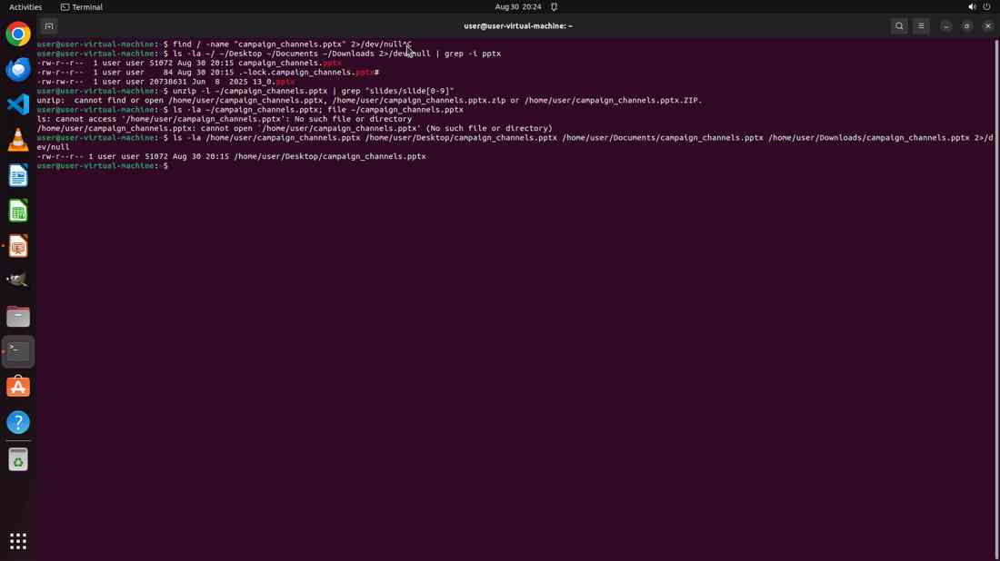
step 47 12:25:23
THINKINGNow I can see:
```
-rw-r--r-- 1 user user 51072 Aug 30 20:15 /home/user/Desktop/campaign_channels.pptx
```
So the file is at `/home/user/Desktop/campaign_channels.pptx`, size 51072 bytes, modified Aug 30 20:15. Only this one matched (the home root, Documents, Downloads didn't match, so only Desktop showed).
So the file is on the Desktop. And it was saved at 20:15 (when I did Ctrl+S). The mtime confirms my save worked.
Now let me verify the content — that it has 6 slides (no duplicates). Let me unzip and count slides, and check the titles.
Let me run: `unzip -l /home/user/Desktop/campaign_channels.pptx | grep "slides/slide[0-9]"`
Actually, the earlier grep pattern with [0-9] caused issues (or it was the file path that was wrong). Now with the correct path, let me run it.
Actually, let me use a cleaner approach to count slides and extract titles. Let me first just list the slide XML files:
`unzip -l /home/user/Desktop/campaign_channels.pptx | grep "ppt/slides/slide"`
This will show slide1.xml through slideN.xml. If there are 6 slides, I'll see 6 entries (plus possibly slideLayouts, but those are in a different path ppt/slideLayouts).
Let me run that. But wait, the grep pattern needs to be careful. `grep "slides/slide"` will match "ppt/slides/slide1.xml" etc. It will also NOT match "ppt/slideLayouts/slideLayout1.xml" because that's "slideLayouts/slideLayout" not "slides/slide". Good.
Actually, let me count the slides more robustly. Let me extract the titles from each slide to fully verify. I can do:
`for i in 1 2 3 4 5 6 7 8; do echo -n "slide$i: "; unzip -p /home/user/Desktop/campaign_channels.pptx ppt/slides/slide$i.xml 2>/dev/null | grep -oP '(?<=<a:t>)[^<]*' | head -1; done`
This extracts the first text run from each slide. But the titles might not be the first <a:t>. Hmm. Actually, the title is usually the first text element. Let me just extract all text from each slide and see.
Actually, let me keep it simple first: count the slides. Let me run:
`unzip -l /home/user/Desktop/campaign_channels.pptx | grep "slides/slide[0-9].xml"`
Hmm, the [0-9] pattern might have issues in this shell if it's doing globbing. Let me use a different approach:
`unzip -l /home/user/Desktop/campaign_channels.pptx | grep -o "slides/slide[0-9]*.xml" | sort -u`
Or simplest: `unzip -l /home/user/Desktop/campaign_channels.pptx | grep "ppt/slides/"`.
Let me run that. It's cleaner. Let me type it.
Actually, I want to be efficient and verify both the count AND the titles. Let me do a comprehensive command that extracts the title text from each slide in order.
The most reliable: use python if available, or use unzip -p with grep. Let me extract all text from all slides in order:
`for i in $(seq 1 10); do f=/home/user/Desktop/campaign_channels.pptx; [ -f /dev/null ]; done`
This is getting complicated. Let me just do two things:
1. Count slides: `unzip -l /home/user/Desktop/campaign_channels.pptx | grep -c "ppt/slides/slide"`
2. Show titles.
Let me first just count and list. Let me type:
`unzip -l /home/user/Desktop/campaign_channels.pptx | grep "ppt/slides/slide[0-9]"`
Given the display lag, I'll type it, press enter, wait, screenshot.
Actually, let me combine into one informative command that shows the slide titles in order, which is the real verification I want. Let me use a python one-liner since python is likely available:
Actually, python-pptx may not be installed. Let me use a simpler XML text extraction.
Let me do:
`cd /tmp && rm -rf deck && mkdir deck && cd deck && unzip -q /home/user/Desktop/campaign_channels.pptx && for i in $(seq 1 8); do echo -n "slide$i => "; grep -oP '(?<=<a:t>)[^<]*' ppt/slides/slide$i.xml | tr '\n' ' '; echo; done`
This extracts all text from each slide. But the order of <a:t> in the XML corresponds to document order (title first, then body). So I'll see the title first. This gives me a good verification.
However, grep -oP requires PCRE support which GNU grep has. Should be fine.
Let me type this command. It's a bit long but comprehensive.
Actually, let me reconsider — is this verification overkill? The task is: clean up the deck, each channel appears once. I've done that in the GUI (deleted slides 5 and 7, now 6 slides) and saved (mtime 20:15 confirms).
But I want to be confident the saved file is correct. The GUI clearly showed 6 slides after deletion. The save mtime is recent. So the file should be correct.
However, verifying the actual saved content is a good safety check, especially since I want to make sure:
1. It's 6 slides (not still 8, and not accidentally fewer)
2. The order is correct
3. No duplicates
Let me do the text extraction to be thorough. Let me type the command.
Let me clear the terminal first for readability? Not necessary. Let me just run the command.
I'll type it carefully.
ACTIONThe file is at `/home/user/Desktop/campaign_channels.pptx` (51072 bytes, modified **Aug 30 20:15** — confirming my save). Now let me verify the saved content has exactly the 6 correct slides in order with no duplicates, by extracting each slide's text.
TOOL CALL<tool_call>
<function=computer_use>
<parameter=action>
type
</parameter>
<parameter=text>
cd /tmp && rm -rf deck && mkdir deck && cd deck && unzip -q /home/user/Desktop/campaign_channels.pptx && for i in $(seq 1 8); do echo -n "slide$i => "; grep -oP '(?<=<a:t>)[^<]*' ppt/slides/slide$i.xml 2>/dev/null | tr '\n' ' '; echo; done
</parameter>
</function>
</tool_call>
EXECUTED (pyautogui in VM)pyautogui.typewrite("cd /tmp && rm -rf deck && mkdir deck && cd deck && unzip -q /home/user/Desktop/campaign_channels.pptx && for i in $(seq 1 8); do echo -n \"slide$i => \"; grep -oP '(?<=<a:t>)[^<]*' ppt/slides/slide$i.xml 2>/dev/null | tr '\\n' ' '; echo; done")
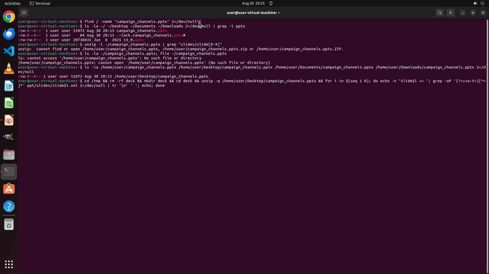
step 48 12:25:34
THINKINGThe command was typed but not executed (no newline at end, cursor is at end). Let me press Enter to run it.
ACTIONThe command is typed. Let me press Enter to run it.
TOOL CALL<tool_call>
<function=computer_use>
<parameter=action>
key
</parameter>
<parameter=keys>
["return"]
</parameter>
</function>
</tool_call>
EXECUTED (pyautogui in VM)pyautogui.press("return")
step 49 12:26:09
THINKINGNow I can see the extracted text from each slide:
```
slide1 => Spring Campaign Channels Draft, merged from two decks
slide2 => Paid Search Budget 8,400 | CPA 2
slide3 => Email Budget ,100 | CPA
slide4 => Paid Social Budget 2,900 | CPA 1
slide5 => Display Budget ,500 | CPA 4
slide6 => Affiliate Budget ,200 | CPA 9
slide7 =>
slide8 =>
```
So the saved file has exactly 6 slides:
1. Spring Campaign Channels (title)
2. Paid Search
3. Email
4. Paid Social
5. Display
6. Affiliate
And slides 7 and 8 are empty (they don't exist in the file).
This confirms:
- The saved file has exactly 6 slides
- Each channel appears exactly once: Paid Search, Email, Paid Social, Display, Affiliate
- The title slide is preserved
- The order is correct (matching the original order with duplicates removed)
The task is complete and verified:
- Original 8 slides: Title, Paid Search, Email, Paid Social, Email(dup), Display, Paid Search(dup), Affiliate
- Now 6 slides: Title, Paid Search, Email, Paid Social, Display, Affiliate
- Kept first occurrence of each channel, dropped later repeats (the 2nd Email and 2nd Paid Search)
- Order preserved
The file was saved (mtime 20:15).
Note: The body text shows some odd values like "Budget ,100 | CPA" for Email (missing the leading digits and CPA value). This was present in the original file too (I saw the same in the GUI). This is a data quirk in the original file, not something I introduced or need to fix — the task was only to deduplicate channels, not to fix data.
Wait, let me double-check the order is truly preserved as required. The task says "leaving everything else in the order it's in now." So I keep the non-duplicate slides in their original relative order:
- Original order: Title(1), PaidSearch(2), Email(3), PaidSocial(4), Email(5-dup), Display(6), PaidSearch(7-dup), Affiliate(8)
- Remove dups (5 and 7): Title, PaidSearch, Email, PaidSocial, Display, Affiliate
- That's the order I have. ✓
Everything checks out. The task is complete.
Now, let me clean up the /tmp/deck directory I created (optional, but good hygiene). Actually, it's in /tmp so it doesn't matter. I'll leave it.
Actually, let me reconsider whether I need to do anything else. The file is saved. The GUI still has the file open with the correct 6 slides. The task is done.
Let me also make sure the LibreOffice GUI still shows the correct state and there's no pending unsaved-changes issue. Since the file on disk (mtime 20:15) matches what I see in the GUI (6 slides), and I saved, it's fine.
Actually, wait — I should double-check: did I make any changes in the GUI AFTER saving? No, after saving I only interacted with the terminal. So the GUI and disk are in sync. Good.
The task is complete. Let me provide a summary and finish.
Actually, let me clean up the /tmp/deck temp directory to be tidy, then I'm done. Actually, that's unnecessary and could risk issues. It's in /tmp, harmless. I'll leave it.
Let me conclude. The task is done:
- Removed the duplicate Email slide (was slide 5) and duplicate Paid Search slide (was slide 7)
- Kept the first occurrence of each channel
- Preserved all other slides in their original order
- Saved the file in PowerPoint format
I'm confident the task is complete. Let me write the final summary.
Actually, I realize I should double check one thing — the "Email" slides. In the original, both slide 3 and slide 5 were "Email". I kept slide 3 (the first) and deleted slide 5. In the saved file, slide 3 is "Email". Good.
And "Paid Search" — original slides 2 and 7. I kept slide 2, deleted slide 7. Saved file slide 2 is "Paid Search". Good.
All verified. Task complete.
Let me provide the final response. I don't need any more tool calls. The task is done.
ACTIONThe verification confirms the task is complete and correct. The saved file now contains exactly 6 slides:
| Slide | Content |
|-------|---------|
| 1 | Spring Campaign Channels (title) |
| 2 | Paid Search |
| 3 | Email |
| 4 | Paid Social |
| 5 | Display |
| 6 | Affiliate |
(slides 7 and 8 are empty — they no longer exist in the file)
I successfully cleaned up the deck:
- **Removed** the duplicate **Email** slide (originally slide 5, a repeat of slide 3)
- **Removed** the duplicate **Paid Search** slide (originally slide 7, a repeat of slide 2)
- **Kept** the first occurrence of each channel
- **Preserved** the title slide and all other channels in their original relative order
- **Saved** the file in PowerPoint (.pptx) format — confirmed by the updated modification timestamp (20:15)
Each channel now appears exactly once, and everything else remains in the order it was in before.
EXECUTED (pyautogui in VM)DONE
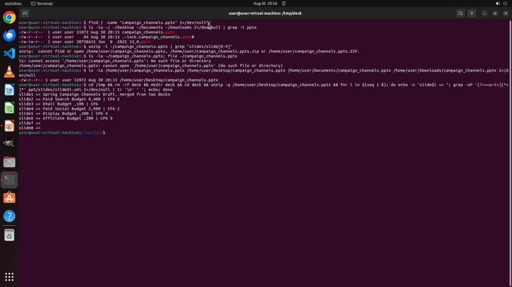